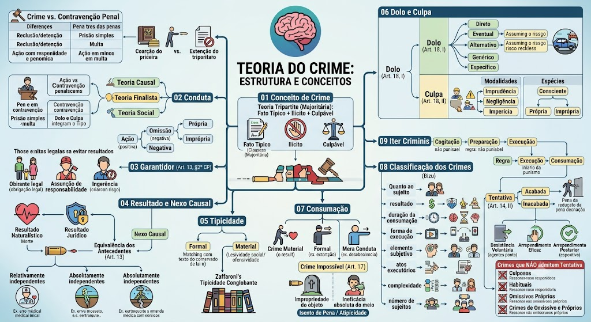

Conceitos material, formal e analítico de crime, infração penal, conduta (teorias causal, finalista e social), omissão, resultado, nexo causal, tipicidade, dolo, culpa, consumação, crime impossível, classificações doutrinárias e iter criminis.
Conceito de Crime e Infração Penal
Material: Crime é todo fato humano lesivo a um bem jurídico penalmente relevante (lesividade social).
Formal: Crime é toda conduta descrita na lei como infração (adequação ao tipo legal).
Analítico (Tripartite - majoritária): Crime é fato típico, ilícito e culpável.
Bipartite (minoritária): Crime é fato típico e ilícito (culpabilidade como pressuposto de aplicação da pena).
Crime: Penas de reclusão ou detenção; ação penal pública incondicionada (regra) ou privada; regras do Código Penal (Parte Geral aplicável).
Contravenção: Penas de prisão simples (sem regime fechado) ou multa; ação penal pública incondicionada (regra); regidas pela Lei de Contravenções Penais (Decreto-Lei 3.688/41).
Diferenças práticas:
- Contravenção não admite prisão em flagrante convertida em preventiva? (exige fiança);
- Prazos prescricionais menores;
- Não se aplica o princípio da insignificância da mesma forma (STJ restringe).
Conduta e Teorias
Teoria Causal (Naturalista): Conduta é um movimento corporal voluntário (ação) ou omissão, com produção de um resultado. Não há valoração, apenas relação de causalidade. Crítica: separa dolo e culpa, tratando-os como mera culpabilidade.
Teoria Finalista (adotada pelo CP/42): Conduta é a ação ou omissão humana dirigida a uma finalidade (dolo natural). O dolo e a culpa integram o tipo penal (fato típico), e não apenas a culpabilidade.
Teoria Social: Conduta é a ação ou omissão humana que produz uma consequência socialmente relevante. Valoriza o contexto social do comportamento.
Ação: Comportamento humano positivo (fazer algo proibido pela lei).
Omissão: Comportamento negativo (não fazer algo que a lei ordenava). Subdivide-se em:
- Omissão própria (crime omissivo puro): descumprimento de um dever genérico de agir (ex.: omissão de socorro - art. 135 do CP).
- Omissão imprópria (comissivo por omissão): descumprimento de um dever especial de garantidor (art. 13, §2º).
Crimes Omissivos e Garantidor
Próprios (Puros): A lei descreve uma conduta de não fazer. Basta a inércia do agente. Ex.: Omissão de socorro (art. 135). Não admitem tentativa, pois ou se omite ou não se omite.
Impróprios (Comissivos por Omissão): O agente tem o dever de evitar o resultado, mas se omite, respondendo como se tivesse praticado a ação. Ex.: A mãe que deixa de alimentar o filho, causando-lhe a morte (homicídio por omissão).
A omissão é penalmente relevante quando o omitente devia e podia agir para evitar o resultado. Têm o dever de garantia:
a) Quem tem obrigação legal de cuidado, proteção ou vigilância (pais, tutores, curadores);
b) Quem, de outra forma, assumiu a responsabilidade de impedir o resultado (ex.: segurança de boate, salva-vidas);
c) Quem, com seu comportamento anterior, criou o risco da ocorrência do resultado (ingerência).
Resultado e Nexo Causal
Naturalístico: Modificação no mundo exterior perceptível, exigida em crimes materiais (ex.: a morte no homicídio, a lesão corporal).
Jurídico: Lesão ou perigo de lesão ao bem jurídico tutelado. Presente em todo crime, inclusive nos de mera conduta (ex.: porte de arma – o resultado jurídico é a ofensa à segurança pública).
Relação de causa e efeito entre a conduta e o resultado naturalístico. O CP adotou a Teoria da Equivalência dos Antecedentes (Conditio Sine Qua Non): é causa toda ação ou omissão sem a qual o resultado não teria ocorrido.
Causas Supervenientes (Art. 13, §1º):
- Relativamente independentes: Interrompem o nexo causal apenas se por si só produziram o resultado (ex.: causa que agravou o estado da vítima). Responde pela conduta anterior se o resultado decorrer do risco criado.
- Absolutamente independentes: Não guardam relação com a conduta do agente. Excluem o nexo causal (ex.: terremoto que mata a vítima após o tiro não letal).
Tipicidade
Formal: A conduta se amolda perfeitamente à descrição abstrata da lei penal (adequação formal ao tipo).
Material: A conduta, além de se adequar à lei, deve ser socialmente lesiva e ofensiva ao bem jurídico (princípio da lesividade).
Conglobante (Doutrina de Zaffaroni): A tipicidade exige a verificação do sentido da norma no ordenamento como um todo. A conduta deve ser contrária ao sistema normativo, não apenas à letra da lei.
Imediata (Direta): A conduta se subsume diretamente ao tipo penal (ex.: matar alguém = homicídio).
Mediata (Indireta ou Subsidiária): Ocorre quando há um conflito aparente de normas. Ex.: lesão corporal subsidiária em relação à tentativa de homicídio.
Dolo e Culpa
Vontade e consciência de realizar a conduta típica. Espécies:
Direto (Determinado): O agente quer e busca o resultado (ex.: atirar para matar).
Eventual (Indeterminado): O agente assume o risco de produzir o resultado (ex.: atirar para o alto em via pública, assumindo o risco de matar alguém).
Alternativo: O agente prevê dois resultados possíveis e quer qualquer um deles (ex.: atirar contra A ou B, indiferente a quem atinge).
Genérico (Dolo natural): Vontade de praticar a conduta, sem elemento subjetivo específico (presente na maioria dos crimes).
Específico (Elemento subjetivo do tipo): O agente quer um resultado além do dolo, previsto expressamente no tipo (ex.: no furto, a intenção de "para si ou para outrem").
Conduta involuntária, por imprudência, negligência ou imperícia.
Modalidades:
- Imprudência: conduta comissiva perigosa (ex.: dirigir em alta velocidade).
- Negligência: conduta omissiva, descuido (ex.: deixar arma ao alcance de crianças).
- Imperícia: falta de habilidade técnica (ex.: médico que opera de forma inadequada).
Espécies:
- Culpa Consciente: O agente prevê o resultado, mas acredita que não ocorrerá (ex.: ultrapassar em local proibido).
- Culpa Inconsciente: O agente não prevê o resultado, mas deveria prevê-lo.
- Culpa Própria: O resultado é involuntário e não há dolo.
- Culpa Imprópria (Excesso culposo): O agente pratica uma conduta inicialmente dolosa (ex.: legítima defesa), mas causa um resultado por culpa no excesso.
Consumação e Crime Impossível
Material: Exige a produção do resultado naturalístico para a consumação. Ex.: Homicídio (morte), Furto (posse da coisa).
Formal: A lei prevê um resultado naturalístico, mas a consumação ocorre com a conduta, independentemente deste resultado. Ex.: Extorsão mediante sequestro (art. 159) – consuma-se com a exigência, mesmo que não receba o resgate.
Mera Conduta: A lei não exige resultado naturalístico. A consumação se dá com a simples ação ou omissão. Ex.: Desobediência (art. 330), Porte de arma.
É a tentativa inidônea, quando, por ineficácia absoluta do meio ou impropriedade absoluta do objeto, é impossível a consumação do crime.
Efeito: O agente não responde pelo crime (é isento de pena).
Exemplos:
- Ineficácia absoluta do meio: usar veneno que não faz efeito para matar.
- Impropriedade absoluta do objeto: atirar em um cadáver (pensando ser pessoa viva).
📌 Atenção: Para a doutrina majoritária, trata-se de causa de atipicidade absoluta. Se o meio/objeto são relativamente ineficazes/impróprios, pode configurar tentativa (aplicação da pena reduzida).
Classificação dos Crimes
📌 Quanto ao sujeito:
- Comum: qualquer pessoa pode praticar.
- Próprio: exige sujeito ativo qualificado (ex.: peculato – funcionário público).
- Mão-própria: conduta só pode ser praticada pelo próprio agente (ex.: falso testemunho).
📌 Quanto ao resultado:
- Material: exige resultado naturalístico.
- Formal: consumação na conduta, independente do resultado.
- Mera conduta: não exige resultado naturalístico.
📌 Quanto à duração da consumação:
- Instantâneo: consumação se esgota em um momento (ex.: homicídio).
- Permanente: consumação se prolonga no tempo (ex.: sequestro).
- Instantâneo de efeitos permanentes: consumação instantânea, mas os efeitos são duradouros (ex.: lesão corporal que deixa cicatriz).
📌 Quanto à forma de execução:
- Comissivo: ação.
- Omissivo: omissão (próprio ou impróprio).
📌 Quanto ao elemento subjetivo:
- Doloso: vontade de realizar o tipo.
- Culposo: sem vontade, por negligência, imprudência ou imperícia.
📌 Quanto aos atos executórios:
- Unissubsistente: único ato executório (ex.: injúria verbal).
- Plurissubsistente: vários atos executórios (ex.: furto, homicídio).
📌 Quanto à complexidade:
- Simples: ofende um único bem jurídico.
- Complexo: fusão de dois ou mais crimes (ex.: roubo = furto + coação/lesão).
📌 Quanto ao número de sujeitos:
- Monossubjetivo: pode ser praticado por um único agente.
- Plurissubjetivo (concurso necessário): exige pluralidade de agentes (ex.: rixa, bigamia).
Iter Criminis, Tentativa e Crimes que não a admitem
1. Cogitação: idealização do crime – não punível.
2. Preparação: atos preparatórios – regra: não puníveis (exceções: crimes de perigo abstrato ou quando a lei pune a preparação, ex.: associação criminosa).
3. Execução: início da realização do tipo – início da punibilidade.
4. Consumação: todos os elementos do tipo se aperfeiçoam.
O agente inicia a execução do crime, mas não o consuma por circunstâncias alheias à sua vontade.
- Acabada (perfeita): esgota todos os atos executórios, mas o resultado não ocorre.
- Inacabada (imperfeita): interrompe a execução antes da prática de todos os atos.
Pena: reduzida de 1/3 a 2/3 em relação ao crime consumado.
Exceção: A tentativa é punível apenas nos crimes dolosos (art. 14, II).
Desistência Voluntária (Art. 15): O agente interrompe a execução por vontade própria. Responde apenas pelos atos já praticados.
Arrependimento Eficaz (Art. 15): O agente já executou, mas, por vontade própria, impede o resultado. Responde apenas pelos atos já praticados.
Arrependimento Posterior (Art. 16): O crime já foi consumado (sem violência ou grave ameaça). O agente repara o dano ou restitui a coisa até o recebimento da denúncia. A pena é reduzida de 1/3 a 2/3.
A tentativa só é possível nos crimes dolosos e que exijam uma progressão fática. Não se admite nos seguintes casos:
a) Crimes culposos (não há vontade de resultado).
b) Crimes habituais (a prática reiterada é elemento do tipo, ex.: curandeirismo – art. 284).
c) Crimes omissivos próprios (basta a inércia, não há execução a ser interrompida).
d) Crimes preterdolosos (dolo na conduta anterior e culpa no resultado; não há dolo no resultado final).
e) Crimes unissubsistentes (a execução se esgota em um único ato, ex.: injúria verbal).
f) Crimes de mera conduta e formais (para alguns doutrinadores, em tese admitem tentativa, mas a depender da estrutura do tipo; a regra geral é que crimes que não exigem resultado naturalístico podem ser tentados se a execução for fracionável, mas tradicionalmente se lista os omissivos próprios e unissubsistentes como os mais pacíficos).
Material de estudo: Teoria do Crime
Material complementar · Ver fonte no GitHub
Iter Criminis, Tentativa e Crimes que não a admitem
Tentativa (Art. 14, II do CP)
O agente inicia a execução do crime, mas não o consuma por circunstâncias alheias à sua vontade.
Espécies:
- Acabada (perfeita): esgota todos os atos executórios, mas o resultado não ocorre.
- Inacabada (imperfeita): interrompe a execução antes da prática de todos os atos.
Pena: reduzida de 1/3 a 2/3 em relação ao crime consumado.
Exceção: A tentativa é punível apenas nos crimes dolosos (art. 14, II).
Mapa-mental
